Universidad Nacional Autónoma de México
Facultad de Ingeniería
Unidad de Creación de Materiales Docentes para Ingeniería – UCREMDI

Unidad de Creación de Materiales Docentes para Ingeniería – UCREMDI
Proyecto PAPIME PE112824
Periodo 2024-2026
La Universidad Nacional Autónoma de México, a través del Programa de Apoyo a Proyectos para Innovar y Mejorar la Educación (PAPIME), impulsa el fortalecimiento sistemático de los procesos de enseñanza y aprendizaje en los programas de licenciatura, en sus diversas modalidades, promoviendo estrategias de innovación educativa orientadas a elevar la calidad académica (DGAPA–PAPIME, UNAM, 2023). En este marco institucional, el presente proyecto se desarrolla en el ámbito de la Facultad de Ingeniería, atendiendo a las necesidades específicas de su comunidad estudiantil y docente.
El proyecto surge a partir de la identificación y análisis de asignaturas caracterizadas por un alto grado de abstracción conceptual y complejidad técnica, en las cuales el uso exclusivo de recursos didácticos tradicionales resulta insuficiente para favorecer la apropiación significativa de los contenidos. En respuesta a esta problemática, se planteó el diseño, desarrollo e implementación de materiales didácticos especializados, con énfasis en recursos visuales, estructurados y metodológicamente articulados con los programas de estudio vigentes.
En este contexto, UCREMDI (Unidad de Creación de Materiales Docentes para Ingeniería) se consolida como una estrategia institucional de innovación educativa cuyo objetivo central es sistematizar los procesos de creación, actualización, validación y difusión de materiales didácticos dirigidos a la enseñanza de la ingeniería.
Asimismo, en el Plan de Desarrollo Institucional de la Facultad de Ingeniería 2023-2027 en el Eje de Trabajo o Proyecto 2B se concibe como el componente operativo y metodológico de UCREMDI, mediante el cual se instrumentan acciones concretas para la producción, organización y evaluación académica de los materiales generados, así como para la incorporación de estudiantes y docentes en un esquema colaborativo e interdisciplinario. De esta manera, el Proyecto 2B materializa los objetivos académicos de UCREMDI, asegurando la pertinencia pedagógica, la coherencia curricular y la viabilidad técnica de los recursos desarrollados.
El proyecto UCREMDI ha contribuido de manera significativa a la consolidación de una cultura institucional orientada a la innovación educativa, promoviendo la reflexión crítica sobre las prácticas docentes tradicionales y fomentando la adopción de enfoques pedagógicos innovadores apoyados en tecnologías digitales.
A través de la producción de materiales especializados y de la capacitación del personal académico, UCREMDI ha fortalecido la calidad de la docencia en las asignaturas de ingeniería, favoreciendo prácticas de enseñanza más estructuradas, dinámicas y alineadas con las necesidades actuales del estudiantado.
La creación y consolidación de repositorios institucionales ha permitido asegurar la sostenibilidad, actualización y transferencia del conocimiento generado, evitando la dispersión de materiales y facilitando su reutilización en distintos contextos académicos, lo que fortalece la memoria institucional de la Facultad de Ingeniería.
El proyecto se encuentra directamente alineado con los objetivos estratégicos del Plan de Desarrollo Institucional (PDI), particularmente en lo relativo a la innovación educativa, el fortalecimiento de la docencia y la incorporación estratégica de tecnologías digitales, consolidándolo como un componente estratégico del desarrollo académico.
El objetivo general del proyecto UCREMDI es crear y consolidar una unidad institucional especializada en la producción, organización y difusión de materiales didácticos innovadores, orientados a fortalecer los procesos de enseñanza y aprendizaje en las asignaturas de ingeniería impartidas en la Facultad de Ingeniería.
Esta unidad tiene como finalidad incorporar enfoques pedagógicos contemporáneos y herramientas tecnológicas emergentes en el diseño de recursos educativos, asegurando su pertinencia curricular, calidad técnica y accesibilidad, así como su alineación con los programas de estudio vigentes. De esta manera, UCREMDI contribuye a la mejora continua de la práctica docente, al tiempo que promueve la actualización permanente de los contenidos y metodologías utilizadas en la formación de ingenieras e ingenieros.
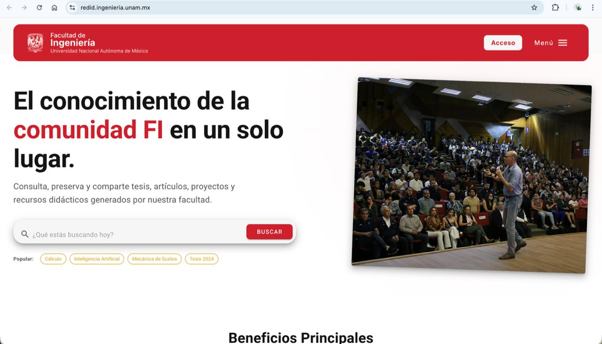
Sistema institucional para la gestión integral de materiales docentes digitales, con prototipo funcional, documentación técnica y proyección de escalabilidad.
Se desarrolló un sistema repositorio institucional para la gestión integral de materiales docentes generados en el marco del proyecto PAPIME–UCREMDI. La plataforma web permite catalogar, clasificar, almacenar y recuperar recursos educativos digitales como videos, manuales y documentación pedagógica. Se diseñó su arquitectura, se implementó un prototipo funcional en versión beta y se elaboró documentación técnica y un video demostrativo, asegurando su posible integración y escalabilidad con sistemas institucionales existentes.
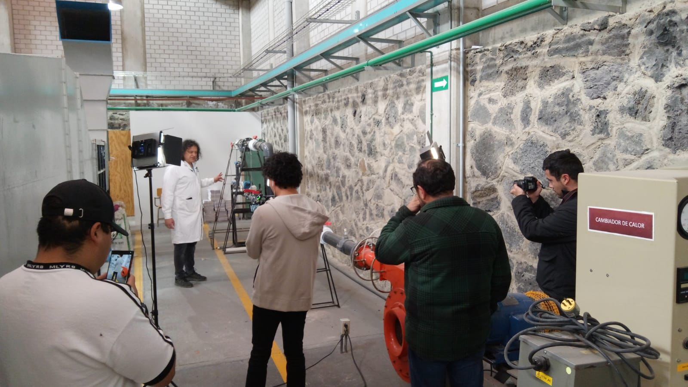
Desarrollo de clases audiovisuales innovadoras para fortalecer la enseñanza en asignaturas estratégicas de ingeniería.
Se produjeron materiales audiovisuales innovadores para las asignaturas de Electricidad y Magnetismo, Física Experimental, Óptica y Estructuras Discretas, superando el modelo tradicional de enseñanza. Las y los docentes participaron en la elaboración de guiones técnicos y procesos de producción profesional, generando contenidos con estándares institucionales. Complementariamente, se fortaleció la fototeca institucional, especialmente en los laboratorios de Física, Electricidad y Microcomputadoras.
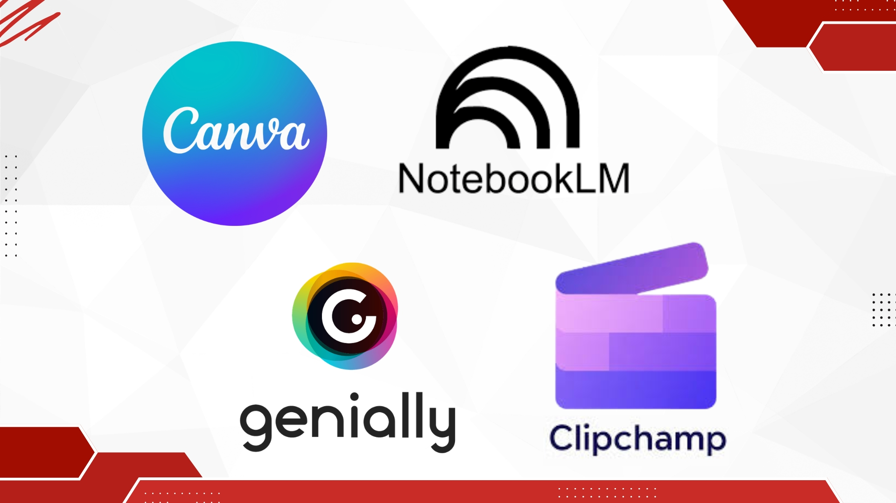
Diseño de cursos autogestivos y manuales técnicos para fortalecer competencias digitales del profesorado.
Se diseñaron cuatro cursos autogestivos orientados al fortalecimiento de competencias digitales docentes: creación visual con Canva, organización del conocimiento con NotebookLM, diseño interactivo con Genially y producción audiovisual con ClipChamp. Además, se elaboraron manuales técnicos, cápsulas educativas y materiales progresivos que podrán integrarse al repositorio UCREMDI para consulta permanente.
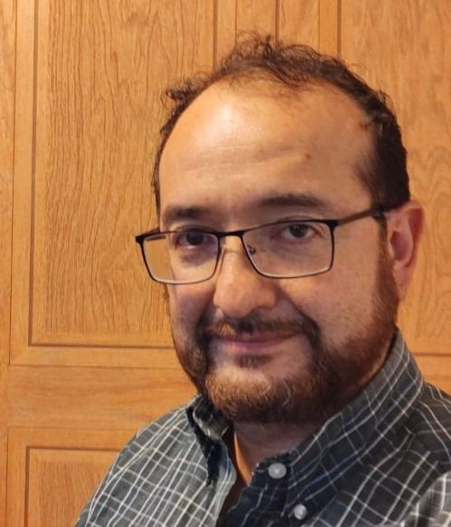
Responsable del Proyecto
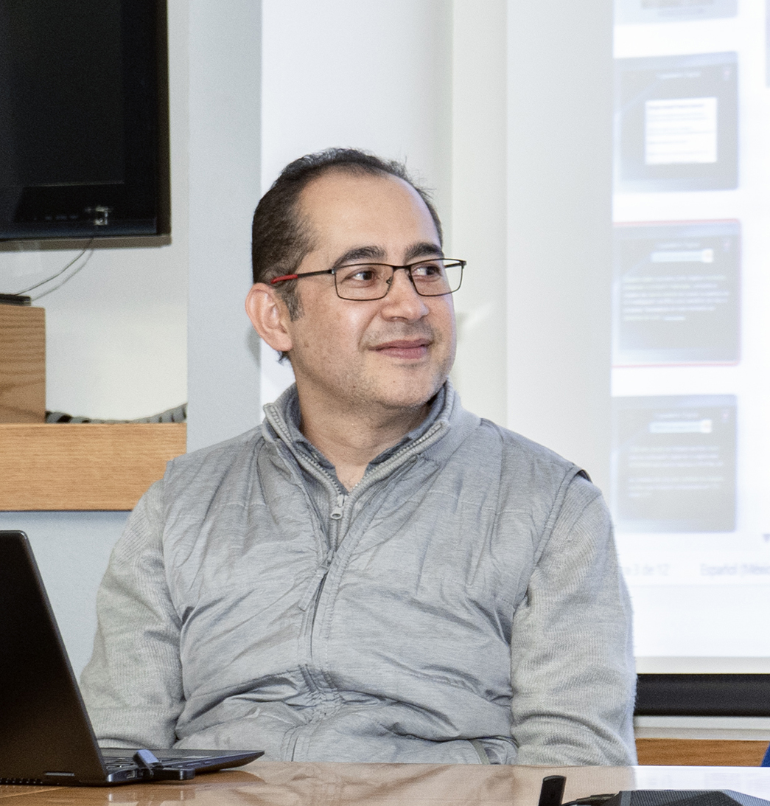
Corresponsable del Proyecto
Corresponsable del Proyecto
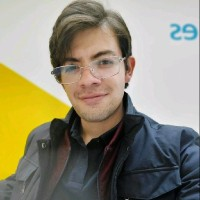
Profesor de Asignatura - DIE
Profesor de Asignatura - DCB
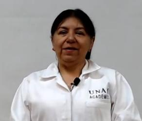
Profesora de Asignatura - DCB
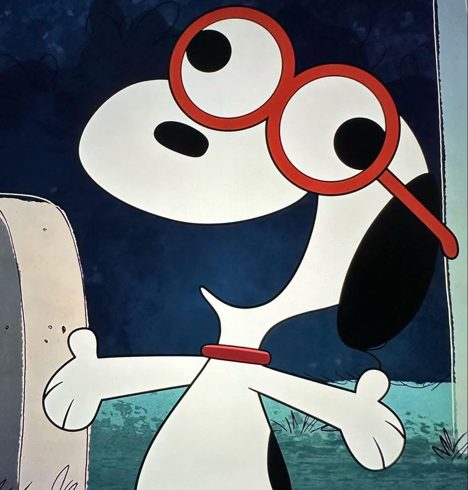
Coordinador Académico del Proyecto
Desarrollo Web y Producción Multimedia

Desarrollo Web y Producción Multimedia
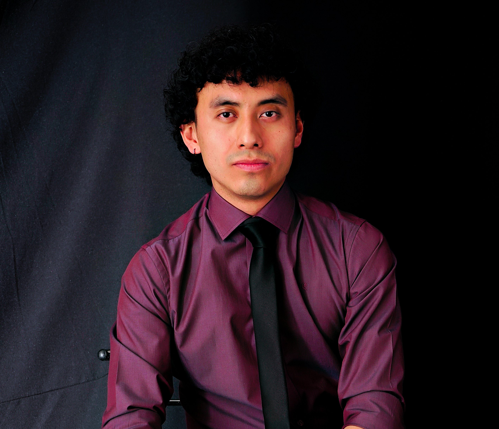
Producción Multimedia
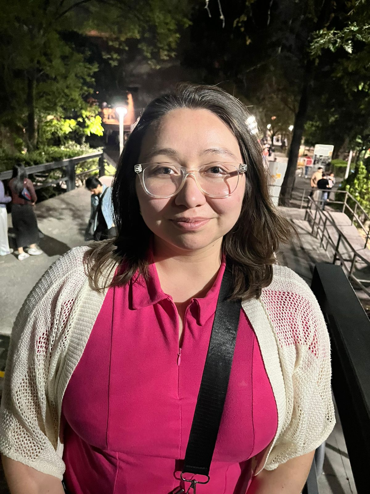
Cursos Autogestivos para la Superación Docente
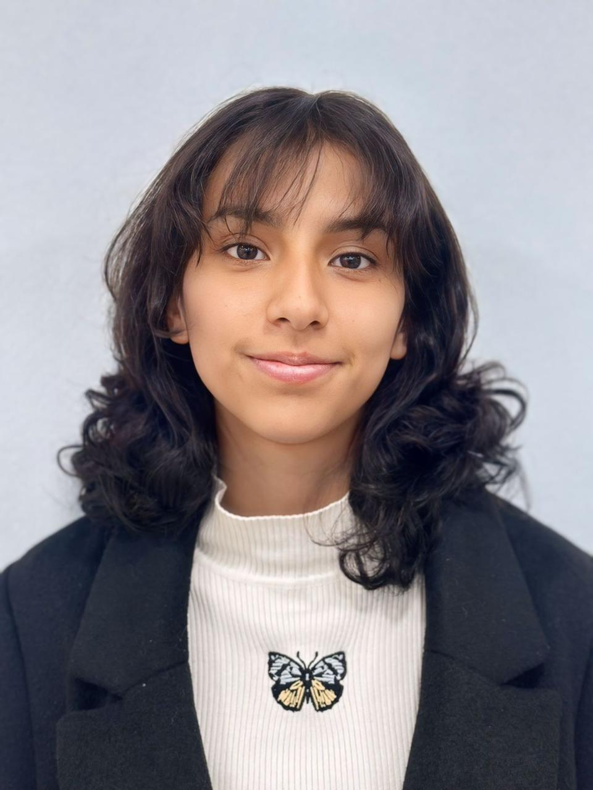
Cursos Autogestivos para la Superación Docente
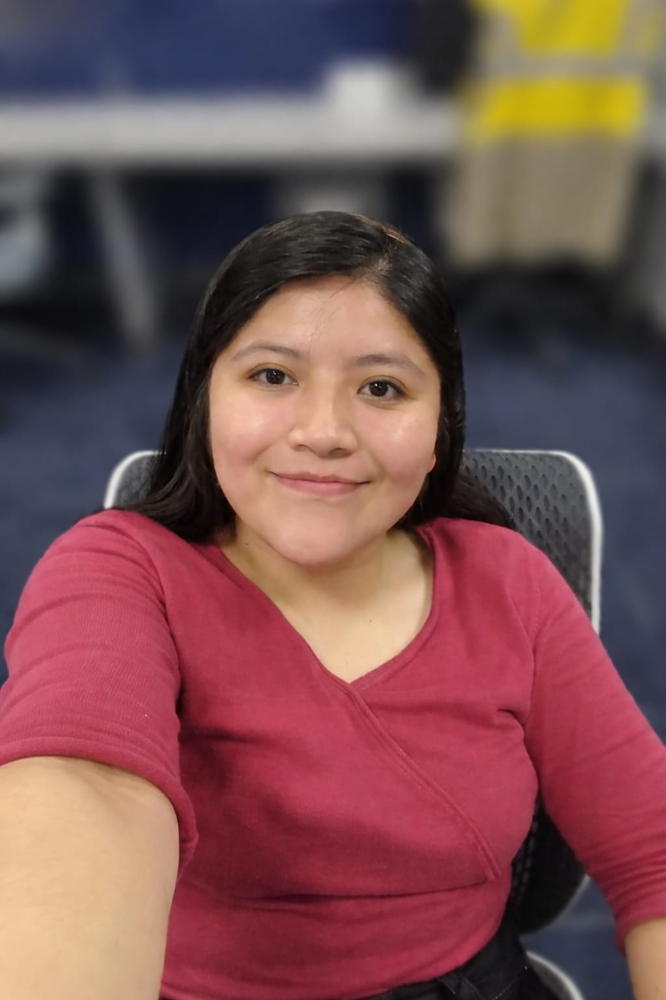
Cursos Autogestivos para la Superación Docente

Cursos Autogestivos para la Superación Docente
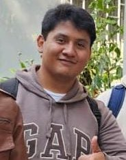
Repositorio Digital
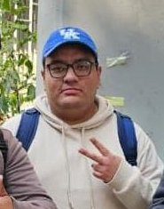
Repositorio Digital
Repositorio Digital
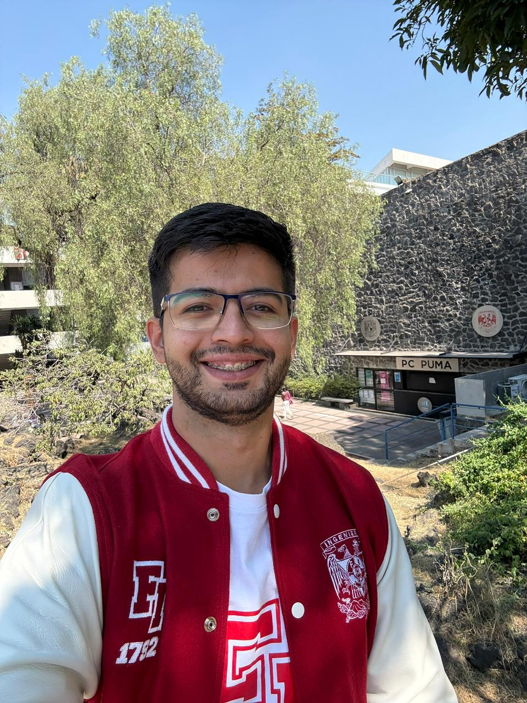
Repositorio Digital
A la Coordinación de Planeación y Desarrollo.
Al Centro de Docencia "Ing. Gilberto Borja Navarrete".
A la División de Ciencias Básicas.
A la División de Ingeniería Eléctrica.
Al Departamento de Computación.
A los Quioscos PC Puma y Departamento de Transformación Digital.
A la Coordinación General de Bibliotecas de la Facultad de Ingeniería.